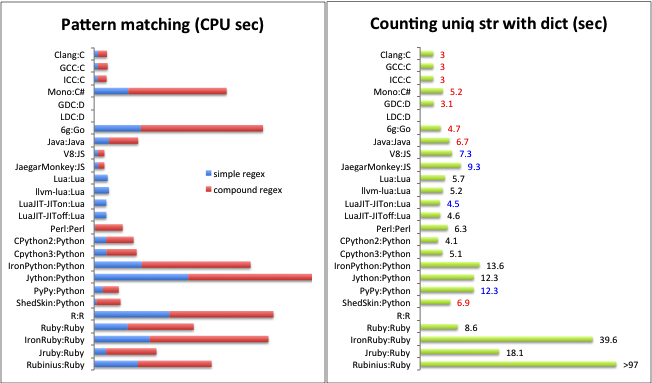

Limbaje de programare de viitor
Domeniul IT este unul foarte dinamic, in continua dezvoltare, care ofera numeroase oportunitati de angajare. Pentru a veni in ajutorul tinerilor care isi doresc sa lucreze in domeniul IT, dar si a specialistilor care sunt interesati de evolutia pietei, HiPo.ro a realizat o analiza a tendintelor privind utilizarea diferitelor limbaje de programare.

In prezent, cele mai populare 10 limbaje de programare sunt: Java, C, C++, PHP, C#, Objectiv C, Visual Basic, Python, Perl si Java Script. In graficul de mai jos poti vedea detalii legate de ponderea fiecarui limbaj de programare in ceea ce priveste popularitatea sa in randul specialistilor din domeniul IT din intreaga lume, a locurilor de munca disponibile, precum si a ofertelor de cursuri de specializare.
Java, un limbaj de programare orientat pe obiect, puternic tipizat, este printre cele mai solicitate limbaje in cerintele job-urilor din Romania, dar si din Europa. Limbajul imprumuta o mare parte din sintaxa de la C si C++, dar are un model al obiectelor mai simplu. Cele mai multe aplicatii distribuite sunt scrise in Java, fiind utilizat si pe dispozitive mobile gen telefon, agenda electronica, palmtop. In urma clasificarilor realizate, Java isi mentine primul loc in topul celor mai utilizate limbaje de programare, la fel cum se intampla si acum 5 ani. Job-urile care cer cunoasterea limbajului de programare Java sunt printre cele mai ofertante, atat din punct de vedere al numarului de locuri de munca disponibile, dar si al pachetului salarial oferit.
C, un limbaj de programare standardizat, compilat, de nivel mediu, este apreciat pentru eficienta codului obiect pe care il poate genera si pentru portabilitatea sa. Sintaxa limbajului C sta la baza multor limbaje de programare populare, precum: C++, Java, JavaScript, C#. Ca si in cazul limbajului Java, acesta se situeaza pe locul doi, la fel ca in 2006.
C++ este un limbaj de programare general, un limbaj multi-paradigma, cu verificare statica a tipului variabilelor, care suporta programare procedurala, abstractizare a datelor si programare orientata pe obiective. A devenit un limbaj foarte popular in anii '90, ramanand la fel pana in prezent, conform statisticilor.
PHP, unul dintre cele mai importante limbaje de programare web open-source si server-side, este folosit pe scara larga in dezvoltarea paginilor si aplicatiilor web. Popularitatea sa se datoreaza simplitatii sale, eficientei, securitatii, flexibilitatii si, nu in ultimul rand, gratuitatii sale.
C# este un limbaj de programare orientat pe obiect, derivat din C++. Avantajele sale sunt: dezvoltarea rapida de aplicatii, functionare inter-platforme, acces la resursele caracteristice platformei si suport pentru platformele COM si .Net. Acest limbaj se bucura de o popularitate ridicata datorita simplificarii scrierii de programe, fiind o cerinta obligatorie cunoasterea sa pentru numeroase job-uri disponibile pe piata muncii in acest moment.
Objective C este o extensie a limbajului de programare C, utilizat pentru dezvoltarea aplicatiilor pentru Apple OS X si iOS. Piata muncii din Romania tine pasul cu evolutia tehnologiei, existand job-uri ofertante pentru programatori si specialisti care sa dezvolte tehnologii pentru iPhone si iPad.
Visual Basic este un alt limbaj de programare prezent in cerintele job-urilor, fiind axat pe componenta de interfata a programului, programatorul realizand cu usurinta interfete standardizate de tip Windows, fara a fi necesara scrierea unui cod. Poate fi utilizat la crearea de programe simple, educationale, dar si la crearea de aplicatii complexe, precum diverse jocuri.
Python este un limbaj de programare dinamic multi-paradigma, folosit de companii precum Google si Yahoo. Este un limbaj popular datorita faptului ca permite crearea rapida a aplicatiilor care nu cer viteze inalte de procesare a datelor, dar si pentru ca este utilizat ca limbaj de criptare folosit in cadrul aplicatiilor scrise in alte limbaje.
Folosit pentru o gama larga de aplicatii precum administrarea de sisteme, dezvoltarea web, aplicatii de retea, interfete grafice, Perl este un limbaj de programare general, ale carui caracteristici sunt: simplitatea utilizarii, suportul pentru programarea procedurala si obiectuala, precum si suportul integrat pentru procesarea de text.
Java Script este un limbaj de programare orientat pe obiect, fiind bazat pe conceptul prototipurilor. Este utilizat atat pentru construirea paginilor web, cat si pentru scriptarea acestora. Programatorii pot utiliza Java Script pentru a verifica datele introduse de utilizatori sau pentru a crea meniuri si efecte animate.
Vezi și ...
Comparație
Limbajul de programare C++ a fost inițial derivat din C. Totuși, nu absolut orice program scris în C este valid C++. Deoarece C și C++ au evoluat independent, au apărut, din nefericire, o serie de incompatibilități între cele două limbaje de programare.
Cea mai amplă revizie a limbajui C, C99, a creat un număr suplimentar de conflicte. Diferențele fac să fie greu de scris programe și biblioteci care să fie compilate și să ruleze corect în calitate de cod C sau C++, și produce confuzii celor care programează în ambele limbaje. Diferențele fac ca fiecare din cele două limbaje de programare să împrumute din caracteristicile celuilalt limbaj de programare.
Limbaje de programare de viitor
Domeniul IT este unul foarte dinamic, in continua dezvoltare, care ofera numeroase oportunitati de angajare. Pentru a veni in ajutorul tinerilor care isi doresc sa lucreze in domeniul IT, dar si a specialistilor care sunt interesati de evolutia pietei, HiPo.ro a realizat o analiza a tendintelor privind utilizarea diferitelor limbaje de programare.
In prezent, cele mai populare 10 limbaje de programare sunt: Java, C, C++, PHP, C#, Objectiv C, Visual Basic, Python, Perl si Java Script. In graficul de mai jos poti vedea detalii legate de ponderea fiecarui limbaj de programare in ceea ce priveste popularitatea sa in randul specialistilor din domeniul IT din intreaga lume, a locurilor de munca disponibile, precum si a ofertelor de cursuri de specializare.